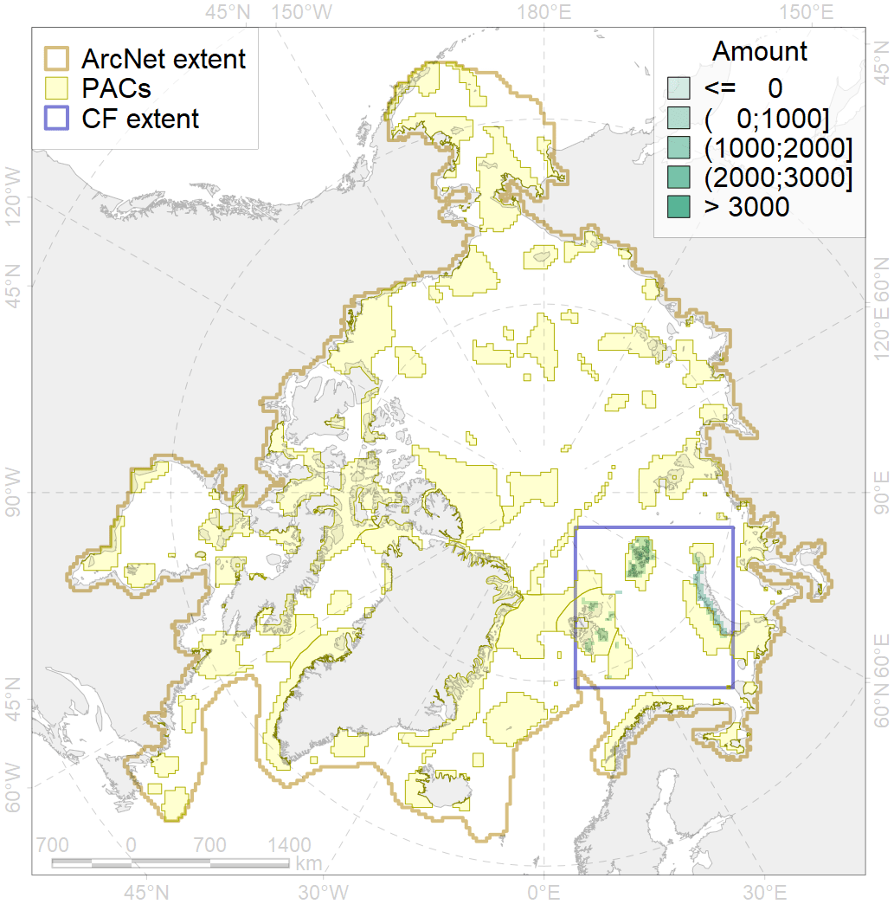
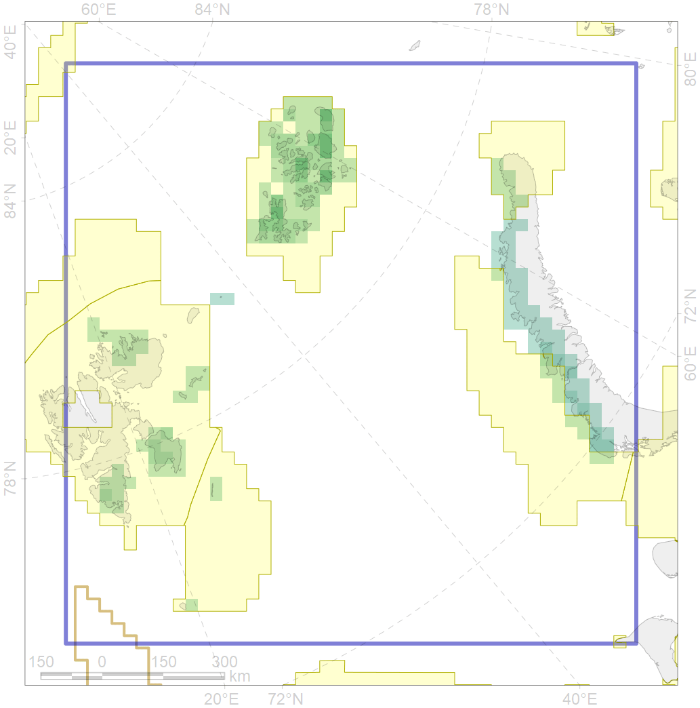

9038

| CF code | 9038 |
| CF name | polar bear denning areas of BS (Barents Sea) subpopulation |
| Time Period | prior to 2015; 1972-2010 |
| Source(s) | Report for project “Creating Atlas of Polar bear in Russian Arctic”; Andersen et al., 2012 |
| Seasonality | Oct-Apr |
| Depth Horizon | 0 |
| Methodology | Field data, expert opinion. |
| Use Restrictions | Could be used for the project |
| Author Name | Evgeniya Melikhova, Stanislav Belikov |
| Notes | |
| Scenario’s Target | 0.528 |
| Target Achievement | 0.826 (Scenario: 156.4%) |
| PAC | Share of the Total Amount within the PAC | Share of the Target Achievement for the ArcNet | PAC’s Contribution to the Target Achievement |
|---|---|---|---|
| 19 | 0.8% | 1.5% | 1.0% |
| 21 | 2.7%2.7% | 4.1%4.1% | 2.6%2.6% |
| 22 | 65.0% | 123.2% | 78.8% |
| 30 | 12.8% | 23.9% | 15.3% |
| 31 | 0.2% | 0.4% | 0.2% |
| inner | 81.5%81.5% | 153.0%153.0% | 97.8%97.9% |
| outer | 18.5%19.3% | 3.4%4.6% | 2.2%3.0% |
| † supplement values are for area consistence whereas principal values are for Accenter compatible gridded stats |